Hand Tools
-
Open Wrench (Kunci Pas)
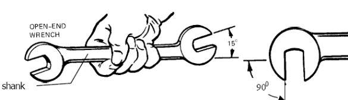
Fungsi Daripada Kunci Pas ialah untuk membuka baut/mur dengan memutar ke arah kanan. Jika ingin mengencangkan maka putarlah ke arah kiri.
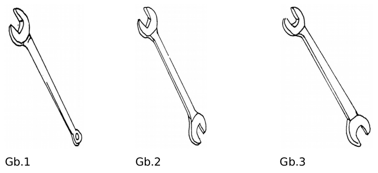
Kelayakan nya dilihat di kepala kunci itu sendiri jika kepala kunci pas itu haus atau dol maka kunci itu tidak akan bisa digunakan.
MACAM MACAM KUNCI PAS
- Kunci Pas Tunggal : kunci pas yang mempunyai diameter dalam pada salah satu sisi saja.
- Kunci Pas Ganda : kunci pas yang mempunyai diameter dalam berbeda pada masing-masing sisi.
-
Sedangkan Kunci Pas Kembar : kedua diameter dalam kunci pas tersebut adalah sama besar
Contoh Penggunaan Kunci Pas
 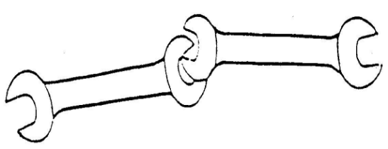
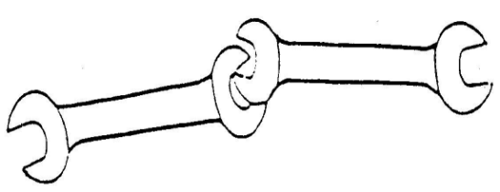

 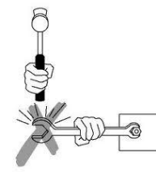
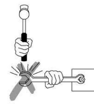
Sudut kepala rusak
-
Kunci Pas Crowfoot
Kunci pas crowfoot digunakan untuk melonggarkan atau mengencangkan mur atau baut yang tidak dapat dicapai oleh kunci pas biasa.
-
kunci sumbat pembuangan
Kunci sumbat pembuangan digunakan untuk mengendorkan dan mengencangkan sumbat pembuangan yang terdapat pada engine,transmisi dan penggerak akhir
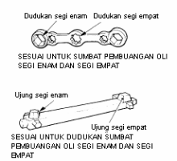
Perawatan:
- Jika Selesai digunakan, simpanlah kunci pas di dalam lemari, dalam perkakas dan di tempat yang aman
- Hindari dari sinar matahari secara langsung
- Berilah WD Secara rutin
- Hindari dari tempat yang lembap agar tidak terjadi pengikisan atau korosi secara langsung kepada kunci tersebut
-
Box Wrench (Kunci Ring)


Fungsi Daripada Kunci Ring ialah untuk membuka baut/mur dengan memutar ke arah kanan. Jika ingin mengencangkan maka putarlah ke arah kiri.
Kelayakan nya dilihat di kepala kunci itu sendiri jika kepala kunci ring itu haus atau dol maka kunci itu tidak akan bisa digunakan.
Beberapa jenis kunci ring-
Ring Dwraf

Kunci Ring Dwarf digunakan pada ruang yang lebih sempit di mana kunci ring standar terlalu panjang atau terlalu tebal sewaktu digunakan pada baut atau mur
-
Kunci Ring Lengkung Kunci

Kunci Ring Lengkung digunakan untuk mencapai komponen yang baut atau murnya akan dikencangkan atau dikendorkan, misalnya digunakan untuk mengencangkan baut motor starter.
Perawatan:- Jika Selesai digunakan, simpanlah kunci pas di dalam lemari, dalam perkakas dan di tempat yang aman
- Hindari dari sinar matahari secara langsung
- Berilah WD Secara rutin
- Hindari dari tempat yang lembap agar tidak terjadi pengikisan atau korosi secara langsung kepada kunci tersebut.
-
Ring Dwraf
-
Standard Combination (Kunci Kombinasi)
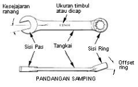
Kegunaan kunci ini ialah penggabungan fungsi kunci pas dan ring. Kunci ini lebih simpel dikarenakan kunci ini saling mengisi kekurangan diantara dua kunci tersebut.
Perawatan :- Jika Selesai digunakan, simpanlah kunci pas di dalam lemari, dalam perkakas dan di tempat yang aman
- Hindari dari sinar matahari secara langsung
- Berilah WD Secara rutin
- Hindari dari tempat yang lembap agar tidak terjadi pengikisan atau korosi secara langsung kepada kunci tersebut.
-
Allen Wrench (Kunci L)
Kunci Allen adalah sebuah kunci yang terbuat dari baja berdaya tekan tinggi berbentuk segi enam (enam sisi) dan dibengkok 90 derajat membentuk batang berbentuk L. Umumnya kunci Allen satu set dengan ukuran mulai dari 1 mm sampai 9 mm. Ukuran kunci Allen diukur sepanjang segi enamnya. Kunci-kunci Allen digunakan untuk melepaskan dan memasang tutup-tutup Allen atau sekrup set
Menggunakan Kunci Allen
Sekrup set mempunyai kepala segi enam dan memerlukan kunci Elen untuk melepas ataupun memasangnya. Tempatkan sekrup set pada posisi yang baik dan ukur jarak sisi sejajar segi enam dan pilih kunci elen yang pas yang tertera pada batang kunci. Untuk sekrup yang lokasinya jauh di dalam lubang, perkirakan ukuran kunci elen dan coba suaiannya (kesesuaian ukurannya). Coba terus beberapa kunci elen sampai diperoleh kunci yang tepat.

Perawatan:
- Jika Selesai digunakan, simpanlah kunci pas di dalam lemari, dalam perkakas dan di tempat yang aman
- Hindari dari sinar matahari secara langsung
- Berilah WD Secara rutin
- Hindari dari tempat yang lembap agar tidak terjadi pengikisan atau korosi secara langsung kepada kunci tersebut
-
Adjustable Wrench (Kunci Inggris)
Kegunaan kunci ini ialah untuk membuat baut/mur yang tidak bisa dilakukan oleh kunci pas/ring, selain itu kunci ini lebih mudah dikarenakan tidak perlu menggunakan tenaga yang tidak terlalu besar seperti kunci pas dan ring. Kelayakannya dilihat dari penyetel rahang kunci inggris dan dilihat dari mulut kunci itu sendiri.
-
Spesifikasi Ukuran Kunci Inggris
Rahang tetapnya dibentuk 5 derajat terhadap gagang. Gigi lurus sebagai tempat rahang bebas di dalam gagang.Pena pasak yang dikartel memposisikan pengatur di dalam gagang sehingga pena tersebut terpasang dengan gigi-gigi pada rack (gigi lurus). Panjangnya kunci ini dapat mulai dari 100 mm sampai 450 mm.
-
Penggunaan Kunci Inggris
-
Mengatur Kunci Inggris
Aturlah kunci inggris agar pas dengan mur atau bautnya. Kunci ini dipaskan dengan menggerakkan mur yang dapat disetel sehingga rahang-rahangnya mencengkeram dengan kuat.
-
Menggunakan Kunci Inggris
Pasanglah kunci pada mur sedemikian rupa sehingga daya tarik sepenuhnya berada pada rahang-rahang yang terkunci. Tariklah kunci pas ke arah anda untuk melepasmur.
Catatan:
Perawatan:
- Jika Selesai digunakan, simpanlah kunci inggris di dalam lemari, dalam perkakas dan di tempat yang aman
- Hindari dari sinar matahari secara langsung
- Berilah WD Secara rutin
- Hindari dari tempat yang lembap agar tidak terjadi pengikisan atau korosi secara langsung kepada kunci tersebut
-
Mengatur Kunci Inggris
-
Spesifikasi Ukuran Kunci Inggris
-
Obeng
Obeng terdiri dari obeng plus (+) dan obeng minus (-)
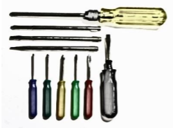
Kegunaan obeng ialah untuk membuka/memasang sekrup + dan sekrup - pada komponen-komponen tertentu pada bagian motor seperti pada lampu kepala, pelindung radiator, dan untuk melepas pengikat seperti sekrup, dll
Kelayakan dilihat dari mata obeng itu jika mata obeng itu bengkok maka tidak bisa digunakan, biasanya digunakan untuk menjadi tumpuan untuk memukul barang.-
Macam-macam obeng
- Obeng standar digunakan untuk melepas atau mengganti pengikat (fastener) seperti sekerup pengetap sendiri dan baut-baut kotak, seperti juga halnya mencungkil cetakan, badge, lis pintu dan lain-lain.
- Obeng pendek (stubby) yang lebih kecil mempunyai batang pendek dan digunakan pada area dimana tidak diperlukan gaya penuasan
- Obeng Plus mempunyai mata berbentuk bintang, digunakan untuk melepas sekerup kepala plus. Obeng jenis ini memungkinkan gaya puntir yang besar dan kecil kemungkinan terjadi slip pada kepala sekerup.
-
Obeng Impact (Obeng Ketrok)
Obeng impact digunakan untuk melepaskan sekrup yang terpasang sangat kencang.
Catatan:
Obeng impact dapat dipakai untuk mengencangkan sekrup. Palu dan obeng ketok digunakan untuk mengendorkan sekrup yang sangat kencang.
Cara Menggunakan obeng ketok
Cara menggunakan obeng ketok adalah dengan memastikan mata obeng terpasang kuat pada baut/ mur kemudian memasang hub dan pemegang, serta memukul pemegang obeng dengan mendadak sehingga mata obeng akan berputar untuk mengencangkan atau membuka baut.
-
Penggunaan Obeng
Obeng harus benar-benar sejajar dengan sumbu sekrup untuk mencegah keruskan kepala sekrup. Ruang di atas sekrup akan menentukan panjang tangkai maksimum obeng. Bila ruang tidak terbatas, sebaiknya gunakan obeng yang paling panjang. Apabila ruang terbatas, mungkin harus menggunakan obeng berbentuk siku.
Perawatan:
Jika selesai digunakan taruhlah obeng di tempatnya agar tidak hilang
-
Macam-macam obeng
-
Tang
Tang digunakan untuk memegang benda kerja
-
Berikut jenis-jenis tang
-
Tang Kombinasi
Tang ini merupakan tang yang sering kita jumpai, dan banyak sekali kegunaannya. Antara lain dapat digunakan untuk menjepit, memuntir, mengupas, dan memotong kabel. Ukurannya biasanya 6-7 inchi
-
Tang curut (tang lancip)
Tang curut ini bentuknya sesuai dengan tikus curut, yaitu jenis tikus yang moncongnya panjang dan lancip. Tang ini juga berfungsi untuk menjepit, dan memudahkan untuk menjangkau sela- sela sempit pada kendaraan.
-
Tang Multigrip (Tang betet)
Tang ini mirip dengan paruh burung, tang burung ini mempunyai daya cengkram yang kuat. Karena pengungkitnya lebih panjang dan kepala langsung ke obyek. Untuk ukuran tersedia dalam ukuran 8 inchi,10 dan 12 inchi.

Bagian-bagian tang Multigrip
Sebuah gagangnya memiliki selot yang diperpanjang takik dan gagang lainnya dikencangkan dengan pena tumpu khusus. Pena tumpu khusus memungkinkan lebar bukaan rahang dapat disetel pada salah satu dari lima posisi. Cocok untuk mencengkeram permukaan-permukaan yang lengkung dan bulat atau mencengkeram komponen-komponen kecil.
-
Tang Snap Ring (circlip)
Tang ini dikenal juga dengan nama tang spi, yaitu berfungsi untuk menarik bantalan kecil dan sebagainya. Tang ini ada 2 model yang dibedakan berdasarkan ujungnya yaitu lurus dan bengkok.
Rahang bundar, bergerigi tajam dan berbentuk tirus agar pas pada lubang lubang kecil di dalam circlip. Jenis ekternal dan internal konstruksi pada titik tumpu gagangnya berbeda. Rahang dari jenis external bergerak ke luar pada saat gagangnya ditekan bersamaan.Jenis Tang Snap Ring (circlip)
-
Jenis tang snap ring internal
Circlip jenis internal, untuk melepas atau memasangnya kedua kaki snap-ringnya bergerak ke arah dalam.
-
Menggunakan tang snap ring Internal
-
Jenis tang snap ring External
Jenis circlip eksternal mengembang ke arah luar dengan sepasang snap-ring eksternal untuk memasang atau melepas circlip
-
Menggunakan tang snap ring External
-
Jenis tang snap ring internal
-
Tang Potong
Tang ini mempunyai mata pisau di sisi dalamnya. Tang ini berfungsi untuk memotong kabel dan kawat
-
Jenis Slip Joint
Tang standar bawaan mobil dan motor. Dimana biasanya menjadi bonus disaat mobil/motor diterima. Fungsinya hampir sama dengan tang kombinasi, tetapi lebih sederhana dari tang kombinasi Satu gagangnya mempunyai selot kecil dan gagang lainnya dikencangkan dengan pena tumpu. Rahang dapat diatur pada salah satu dari dua posisi
-
Tang Pegas Rem
Tang pegas rem digunakan untuk melepaskan dan memasang kembali pegas pengembali sepatu rem yang ada pada teromol rem.
-
Tang Rivet
Terdapat dua tipe yaitu biasa dan fleksibel, kedua fungsinya sama yaitu untuk memasang paku keeling. Untuk yang fleksibel dapat digunakan untuk bidang lurus maupun sudut
-
Tang pengupas kabel
Untuk mengupas kabel 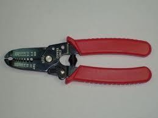
-
Tang Kombinasi
-
Berikut jenis-jenis tang
-
Hammer(Palu)
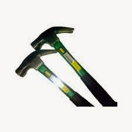
Kegunaan benda ini ialah untuk memukul atau memasang dan melepaskan komponen komponen mesin seperti pada pemasangan bearing, melepaskan sambungan pada propeller shaft dsb.
Kelayakan dilihat dari kepala palu dan tubuh palu, jika ingin memakai peralatan ini perhatikanlah posisi tersebut. -
Socket Wrench (Kunci Soket)
Kunci Socket ialah kunci yang terdiri dari beberapa kunci dimana kegunaannya ialah untuk membuka baut/mur yang jauh dan tidak terjangkau oleh tangan seperti berada di dalam mesin bagian dalam,dsb.
Soket adalah alat berbentuk silinder yang dibuat dari baja tensil tinggi atau sejenis logam paduan yaitu chrome vanadium dan untuk memperbaiki penampilannya dilapisi dengan nikel.
Satu ujung soket mempunyai dudukan segi empat, dan ujung lainnya mempunyai dimensi hexagonal (seperti kunci ring) untuk digunakan pada mur atau baut.-
Karakter Kunci Sok
Kunci sok adalah jenis kunci yang paling baik digunakan untuk melepas komponen dari kendaraan bermotor. Kunci ini akan pas pada baut hampir pada seluruh tempat pada kendaraan
-
Kelemahan dan Kelebihan Kunci Sok
- Kelemahan kunci pas dan kunci ring adalah sulit menjangkau baut dan mur yang berada pada posisi tersembunyi Dengan kunci sok yang dilengkapi dengan batang penyambung (extention), masalah ini dapat terpecahkan.
- Dibandingkan dengan kunci pas dan kunci ring, kunci socket ini lebih besar memberikan gaya torsi atau momen puntirnya terhadap pengencangan atau pelepasan baut dan mur, hal ini karena socket selalu dilengkapi dengan batang pemutar dan Ratchet.
-
Macam-macam kunci socket:
-
Soket digunakan untuk melepas dan memasang mur/baut biasanya terdiri dari socket segi duabelas, segi delapan, dan segi enam. Ada yg panjag maupun pendek serta meiliki ukuran mata 8mm – 33mm
-
Handle berfungsi untuk mempercepat pemasangan maupun pelepasan baut/mur
-
Ratchet Handle, digunakan untuk mengencangkan atau mengendorkan kepala baut/mur dengan cara menyetel arah putaran sesuai keperluan tertentu.
-
Speed Handle, digunakan untuk melepaskan atau mengencangkan baut/mur yang berada pada jauh dari jangkauan tangan.
-
L handle, digunakan pada socket dan dapat bergerak leluasa bebas meskipun kepala baut/mur berada pada posisi rumit.
-
Ratchet Handle, digunakan untuk mengencangkan atau mengendorkan kepala baut/mur dengan cara menyetel arah putaran sesuai keperluan tertentu.
-
Extention berfungsi untuk menghubungkan antara handle dengan mata soket jika mur/baut tidak dapat dijangkau oleh tangkai yang ada.
-
Universal Joint berfungsi sebagai sambungan multi engsel jika menemui kendala dimana saat mengencangkan atau membuka baut/mur tidak dalam posisi tegak lurus dan kesulitan memutar.
-
Adaptor Solit Extension Bar
-
Fliexible Extension Bar
-
Universal Joint berfungsi sebagai sambungan multi engsel jika menemui kendala dimana saat mengencangkan atau membuka baut/mur tidak dalam posisi tegak lurus dan kesulitan memutar.
-
Soket digunakan untuk melepas dan memasang mur/baut biasanya terdiri dari socket segi duabelas, segi delapan, dan segi enam. Ada yg panjag maupun pendek serta meiliki ukuran mata 8mm – 33mm
-
Karakter Kunci Sok
-
Kunci Busi
Kunci busi digunakan untuk melepas dan memasang busi yang umumnya dipasang pada posisi sulit dijangkau oleh kunci pas ataupun kunci ring. Di samping itu kunci busi dirancang khusus untuk tidak mendapat perlakuan momen pengencangan yang terlalu kuat, dengan cara mendesain tangkai yang pendek
-
Kunci Roda
Kunci roda harus digunakan untuk melepaskan mur roda saat melepaskan atau memasang roda. Kunci roda mempunyai soket-soket yang terpasang pada ujung-ujung lengan yang cocok untuk hampir semua kendaraan